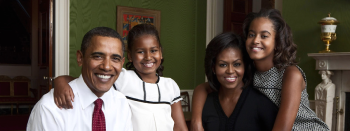

Why I chose the Obamas
The Obamas were arguably the most popular first couple of the USA in the 2000s. It was a time before the disaster of Trump's presidency, and a time full of pride for Americans. The Obamas went to Harvard Law School which is situated in Boston, Massachusetts, a part of the Eastern Seaboard. Harvard is an elite university and a great source of pride for the state. Therefore, these elements combined would be a great deal of inspiration for Eastern Seaboardians.
Barack Hussein Obama
Barack Hussein Obama II (/bəˈrɑːk huːˈseɪn oʊˈbɑːmə/ (About this soundlisten) bə-RAHK hoo-SAYN oh-BAH-mə;[1] born August 4, 1961) is an American politician and attorney who served as the 44th president of the United States from 2009 to 2017. A member of the Democratic Party, Obama was the first African-American president of the United States. He previously served as a U.S. senator from Illinois from 2005 to 2008 and an Illinois state senator from 1997 to 2004. Obama was born in Honolulu, Hawaii. After graduating from Columbia University in 1983, he worked as a community organizer in Chicago. In 1988, he enrolled in Harvard Law School, where he was the first black person to be president of the Harvard Law Review. After graduating, he became a civil rights attorney and an academic, teaching constitutional law at the University of Chicago Law School from 1992 to 2004. Turning to elective politics, he represented the 13th district from 1997 until 2004 in the Illinois Senate, when he ran for the U.S. Senate. Obama received national attention in 2004 with his March Senate primary win, his well-received July Democratic National Convention keynote address, and his landslide November election to the Senate. In 2008, he was nominated for president a year after his presidential campaign began, and after a close primary campaign against Hillary Clinton, Obama was elected over Republican John McCain and was inaugurated alongside Joe Biden on January 20, 2009. Nine months later, he was named the 2009 Nobel Peace Prize laureate.
Michelle LaVaugn Robinson Obama
Michelle LaVaughn Robinson Obama (née Robinson; January 17, 1964) is an American attorney and author who was the First Lady of the United States from 2009 to 2017. She is married to the 44th president of the United States, Barack Obama, and was the first African-American First Lady. Raised on the South Side of Chicago, Illinois, Obama is a graduate of Princeton University and Harvard Law School. In her early legal career, she worked at the law firm Sidley Austin where she met Barack Obama. She subsequently worked in non-profits and as the associate dean of Student Services at the University of Chicago as well as the vice president for Community and External Affairs of the University of Chicago Medical Center. Michelle married Barack in 1992, and they have two daughters. Obama campaigned for her husband's presidential bid throughout 2007 and 2008, delivering a keynote address at the 2008 Democratic National Convention. She has subsequently delivered acclaimed speeches at the 2012, 2016, and 2020 conventions. As first lady, Obama served as a role model for women and worked as an advocate for poverty awareness, education, nutrition, physical activity, and healthy eating. She supported American designers and was considered a fashion icon.